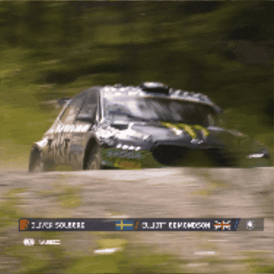
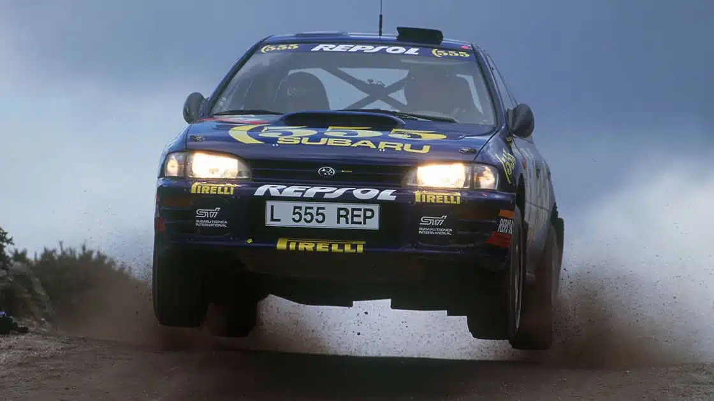
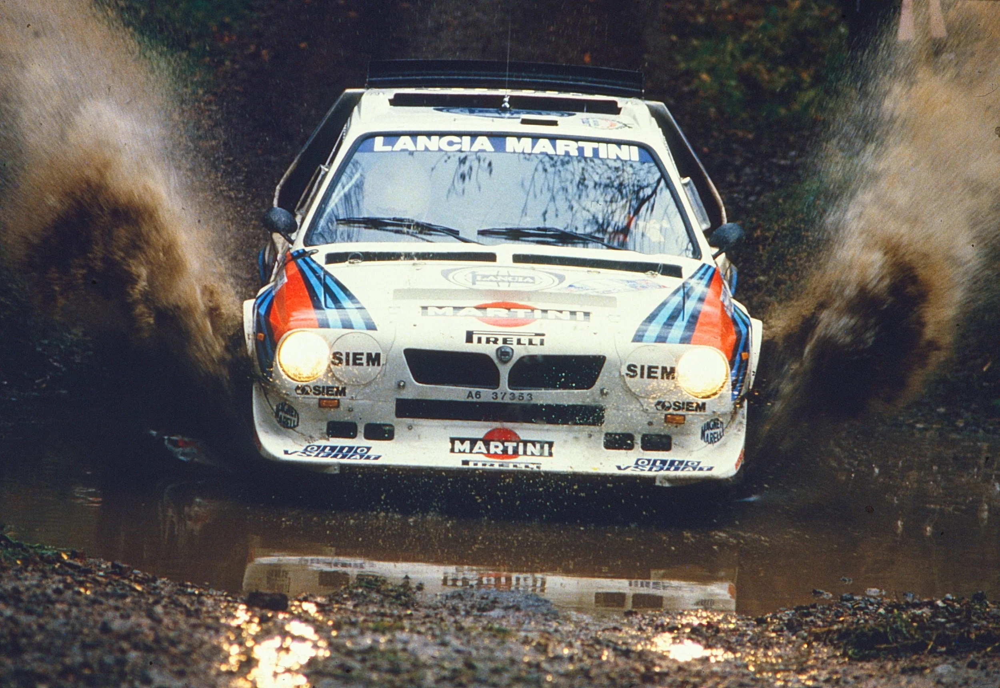
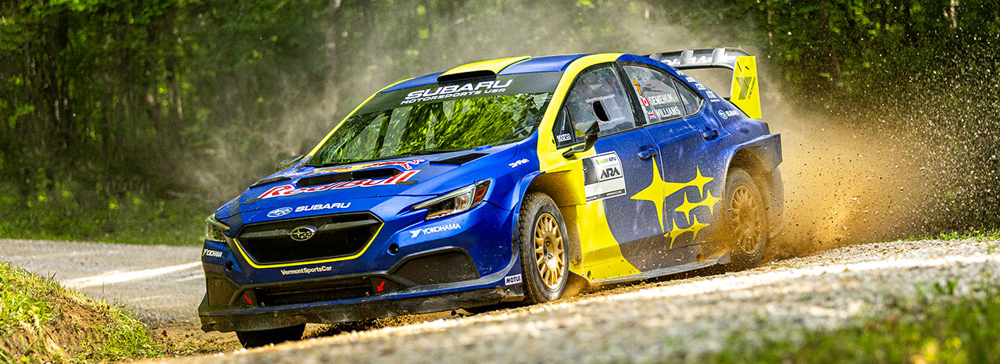

Rally5 (Entry Tier)
Formerly R1, this is the grassroots or club-level tier. These FWD cars have the lowest power-to-weight ratio and are designed primarily to be the most affordable way to get into competitive stage rallying.


Rallying. I can very well be one of the best motorsports. Rallying is also a very old motorsport, just like F1 and Le Mans. Rallying is also one of the most dangerous motorsports, due to limited grip on tarmac and especially on gravel. Rallying takes a huge budget, as well. Engineering is one of the most difficcult parts of rallying, because if only one part has a different tolerance, such as the suspension having different stiffness, the whole car can lead you right into a crash and take the car out of the season.
Group A rally is a type of rally, held by the FIA, that has strict rules regarding the cars.
Manufacturers had to sell 2,500 units of the base model. Because the cars closely resembled everyday road vehicles, this era gave us some of the most famous homologation specials in history:

Group B rally is a controversial, yet legendary motorsport with cars pushing over 500 horsepower and almost no restrictions. This led to some of the most ledendary cars in history of rally.
There were no horsepower limits, and advanced turbocharging, supercharging, and all-wheel-drive systems became the standard.
Cars were constructed using lightweight, high-tech materials like Kevlar, carbon fiber, and fiberglass.
Spectators flocked to the stages in the hundreds of thousands, often standing directly on the racing lines and moving out of the way at the very last second.

Manufacturers capitalized on the permissive homologation rules (requiring only 200 road-going versions of a competing car), producing some of the most iconic and recognizable vehicles in motorsport history:
Formerly R1, this is the grassroots or club-level tier. These FWD cars have the lowest power-to-weight ratio and are designed primarily to be the most affordable way to get into competitive stage rallying.
Formerly the R2 class, these are front-wheel-drive (FWD), highly tuned versions of standard production cars. This is the most popular tier for the Junior WRC and regional championships.
Introduced as a cost-effective bridge to introduce drivers to 4WD machinery. These cars are significantly cheaper to run than Rally2 vehicles but still offer the grip and handling of four-wheel drive.
Formerly known as the R5 class, these are the heavy hitters of WRC2. They are four-wheel-drive (4WD), heavily modified production-based cars capped at a strict cost limit to keep competition accessible to privateer teams.
The top-tier machines used in the FIA World Rally Championship (WRC). These are custom-built, tube-frame chassis cars powered by 1.6-liter turbocharged engines combined with 100kW plug-in hybrid units, producing around 500 horsepower.

| Samuel |
| Devon Christian School |
| Grade 8 |